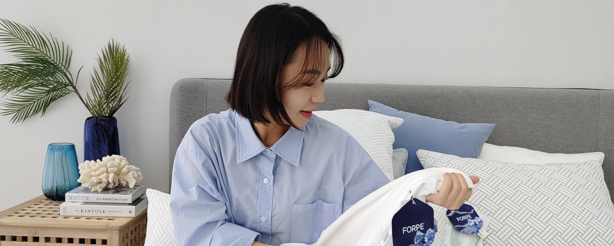

in Issue & Trend
Premium Cooling Fabric
for a Breath of Fresh Comfort
FORPE
As scorching summers have become the norm, the cooling products market is experiencing rapid growth. From haircare and skincare to sun protection, and even daily essentials like wipes, pads, and deodorants, cooling features are increasingly being incorporated into products. The textile industry is no exception—brands are now competing to bring comfort to everyday life. Among them is FORPE, a high-performance cooling fiber brand developed by Kolon Industries, designed to deliver the comforts of cooler temperatures across apparel, sportswear, and bedding.
By Hye-won Kim
Photo Credit Kolon Industries
“Bringing a Cool Touch to Daily Life”
A New Way to Beat the Heat
FORPE is a proprietary fiber brand independently developed by Kolon Industries. Since pioneering the domestic synthetic fiber industry with Korea’s first nylon production in April 1957, Kolon has steadily expanded its product lineup to include polyester, functional petroleum resins, and industrial-use specialty fibers.
In the 2010s, as rising temperatures and heatwaves became more frequent in Korea due to climate change, Kolon turned its attention to developing new materials. The company recognized a growing demand not just for lightweight fabrics, but for scientifically designed materials that could physically lower body temperature. Drawing on over 60 years of material science expertise, Kolon embarked on R&D for a new cooling fiber. After six years of development, the company introduced the FORPE brand in 2017.
Cooling Performance Index(Q-Max)1 (Unit: J/cm2·s)
Cooling, Design, and Safety—All in One
The name “FORPE” combines FORTE (French for “strong”) with PE (short for High Density Polyethylene, or HDPE), reflecting the brand’s philosophy of delivering not only cooling performance, but also durability, functionality, and safety.
Interestingly, FORPE was not originally conceived as a cooling material.
HDPE yarns have high tensile strength and excellent abrasion resistance, but their low dyeability made them impractical for consumer fabrics. Traditionally, HDPE was used in industrial applications like protective gloves where friction and impact resistance were essential. However, Kolon saw another potential: the material’s dense molecular structure allowed for rapid thermal transfer, meaning it could absorb and dissipate heat on contact with the skin. After extensive experimentation—including adjustments to cross-sectional fiber shape, filament alignment, and heat treatment processes—Kolon succeeded in creating a durable, high-performance cooling yarn.
FORPE’s first key strength is its exceptional cooling effect. Made entirely from HDPE, FORPE fibers rapidly absorb and release heat, lowering the skin’s perceived temperature by 3 to 6°C on contact—similar to touching cold metal. It ranks among the most effective cooling textiles available. In fact, tests by the Korea Apparel Testing & Research Institute (KATRI) showed FORPE’s cooling performance is more than twice as effective as commonly known cool fabrics like rayon and nylon.
The second standout feature of FORPE is its proprietary solution-dyeing2 technology. HDPE’s crystallinity makes dyeing difficult, but Kolon developed a technique to embed color directly into the yarn during production, eliminating the need for post-dyeing processes. This results in rich, fade-resistant colors and diverse design options. In 2020, Kolon became the first in Korea to commercialize gray HDPE yarns, and has since supplied various shades of cooling fabrics to leading domestic brands.
Thirdly, FORPE is recognized for its safety. In 2023, it became the first HDPE-based cooling fiber in Korea to earn OEKO-TEX Standard 100 Class I certification—the highest level—indicating it is safe even for infants under age three. Its soft texture makes it suitable for sensitive skin, and its durability has been proven through abrasion tests, scoring 4 to 5 on a 5-point scale, meaning it maintains performance even after repeated washing or friction.
- 1.An indicator of cooling sensation upon skin contact. Higher values denote stronger cooling effects.
- 2.Instead of dyeing yarn or fabric, this method involves dyeing the raw material chips themselves to produce colored yarn. It is known for achieving rich colors, high saturation, and a subtle sheen. HDPE solution-dyed yarn technology is still relatively rare in Korea.
“With its differentiated technology and strong brand competitiveness, FORPE is leading the domestic HDPE cooling fiber market—excelling in cooling performance, color expression, safety, and durability.”
Cooling from Bedroom to Wardrobe
With its differentiated technology and strong brand competitiveness, FORPE is leading the domestic HDPE cooling fiber market—excelling in cooling performance, color expression, safety, and durability. Since its 2017 launch, cumulative sales have grown twentyfold in just four years. To meet rising demand, Kolon more than doubled its production capacity in 2023.
Currently, FORPE holds about 50% of Korea’s HDPE cooling fabric market. It is supplied to bedding brands such as Ace Bed, Simmons, SESA Living, Evezary, DAKS, Sofraum, and CozyNest. Despite increased competition from cheaper PE alternatives, FORPE continues to gain interest as a premium cooling material.
FORPE is also expanding into the apparel sector. Since 2023, Kolon Industries’ fashion division FnC has applied FORPE to its functional cooling apparel line “FORPE Cool Armor,” part of its workwear brand BOLDEST, launched in 2020. The combination of FORPE’s instant cooling effect with BOLDEST’s abrasion-resistant design has made these garments especially popular in hot industrial environments.
Cooling fibers have become a seasonal essential, and Kolon is now expanding FORPE’s application to outdoor and sportswear. International expansion is also on the horizon. Several global bedding companies have expressed interest in FORPE’s unmatched cooling and safety performance, and full-scale overseas distribution is expected to begin in 2026. Kolon aims to make even the hottest summers refreshingly comfortable.